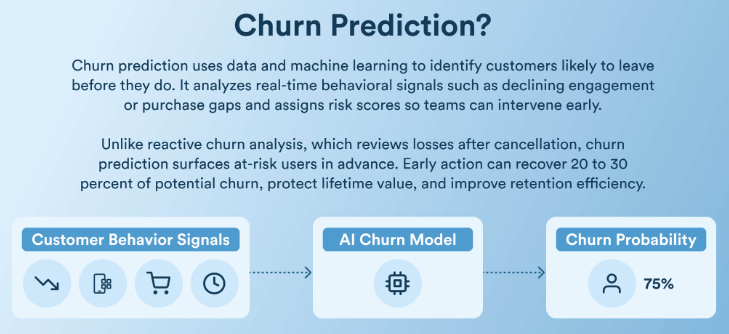

01. The Business Challenge
Customer churn is one of the most expensive problems in e-commerce. It costs significantly more to acquire a new customer than to retain an existing one. For this project, I analyzed a dataset of 5,630 customers to uncover hidden behavioral patterns that lead to churn.
The goal was to move beyond simply identifying churned users, and instead build a predictive system that can flag at-risk customers before they leave, allowing the business to intervene with targeted retention campaigns.
02. End-to-End Methodology
To deliver a scalable and accurate business solution, I followed a structured, end-to-end data science lifecycle:
Data Preprocessing & Cleaning
Addressed missing values and data imbalances to ensure the predictive model learns from reliable, unbiased historical data.
Exploratory Data Analysis (EDA)
Discovered the root behavioral causes of churn, extracting actionable insights around tenure drops, cashback rates, and customer complaints.
Predictive Modeling
Trained, evaluated, and fine-tuned an advanced Machine Learning model (Random Forest) capable of forecasting future churners with high precision.
Customer Segmentation
Clustered the churned user base into distinct personas to enable targeted and highly personalized marketing interventions.
03. Key Churn Drivers
By conducting a deep-dive analysis into the customer data, I identified the top three factors driving users away from the platform:
⏱️ Low Tenure
New users are the most likely to churn. They haven't built loyalty or trust in the brand yet. Action: Overhaul the new-user onboarding experience.
😠 High Complaints
The complaint rate is roughly 2x higher for churned users. A single bad experience triggers an immediate exit. Action: Prioritize and fast-track complaint resolution.
💵 Low Cashback
Churned users receive lower cashback amounts, indicating insufficient financial incentive to stay. Action: Offer dynamic cashback incentives to at-risk segments.
04. Predictive Modeling
To proactively address churn, I developed an advanced Machine Learning model trained on historical customer data. After rigorous testing across multiple algorithms, the final model achieved an impressive 95.5% accuracy in identifying at-risk customers.
This high accuracy ensures that marketing budgets for retention are spent efficiently, targeting only the users who actually need an incentive to stay.
05. Customer Segmentation Strategy
Predicting churn is only half the battle; knowing how to retain them is the other. I segmented the at-risk customers into four distinct personas to enable highly personalized marketing strategies.
🟢 Loyal but Silently Disengaging
Profile: Long-time users who rarely complain but are slowly leaving out of boredom.
Strategy: Engage them with VIP loyalty programs and personalized experiences. Do not rely on discounts.
🔵 Deal-Sensitive Buyers
Profile: New users who bought a product once during a promotion and left.
Strategy: Deploy first-purchase follow-up promotions, bundle deals, and retargeting ads.
🟠 Low-Engagement Mobile Users
Profile: Mobile-first users who spend minimal time on the app.
Strategy: Send targeted push notifications, improve app UX, and introduce gamification.
🔴 High-Value but Demanding
Profile: Digitally-savvy customers facing slow deliveries. They complain because they care.
Strategy: Offer faster delivery options, premium customer support, and proactive follow-ups.
06. Business Impact
Churn is rarely driven by a single factor—it's a mix of pricing sensitivity, product preference, and engagement. By integrating this predictive model into the business workflow, the marketing team can automatically score active customers weekly and route them to their specific retention campaigns, transforming a reactive churn problem into a proactive retention engine.
Explore the Full Project
Interested in the technical methodology behind the 95.5% accuracy? Explore the complete data pipeline, feature engineering, and Python models on GitHub.
View on GitHub →